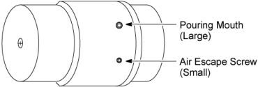

Operating Documentation
Direction 5181166-800, Rev# 7
BrightSpeed Select Service Methods Adv
Operating Documentation |
| Required Persons | Preliminary Reqs | Procedure | Finalization |
|---|---|---|---|
| 1 |
| Last Revised: | 14 March 2007 |
| Item | Qty | Effectivity | Part# | Manufacturer |
|---|---|---|---|---|
| Oil | 1 | - | Z9807QD | - |
| Sealing Tape | 1 | - | - | - |
| Kim wipe | - | - | - |
| Understand and follow the Safety Guidelines Manual. | |
| NOTE: | This procedure is to be used for adding small amounts of oil to the pump only (no more than 0.15 liters). Use the instructions in the Table Pump (Filling) Major Lubrication TABLE PUMP MAJOR LUBRICATION. for the addition of larger amounts of oil such as those needed after replacing the hydraulic cylinder, or after replacing the pump while the Table height is below maximum. |
Remove the following covers and component:
Top Covers (Left and Right) (Refer to Table Covers Removal)
Middle Side Covers (Left and Right) (Refer to Table Covers Removal)
Middle Side Rear Cover (Two(2) Screws)
Cradle (Refer to Cradle)
Left and Right Rail Covers (Four(4)x2 Screws)
Cradle Tray (Six(6) Screws)
"Remove power from Table by turning off “120VAC”, “Axial Drive” and “HVDC” switches on the service switch panel."
Remove the pump with hoses from the Table (Refer to Pump Assembly Replacement).
Remove the pouring mouth screw from the pump.
Pour the estimated required amount of oil into the pump, not more than 0.15 liters.
Re-install the pump, and power up the Table from the Service Switch Panel.
Lower the Table and watch the pump to see if excess oil spills out of the of the pump. If oil leaks out of the pump holes then continue to lower the Table slowly while wiping up any oil which spills out of the pump.
Verify that the Table can rise to its maximum height of approximately 950mm measured from the Table frame to the lowest point of the cradle top surface, and that all movement is smooth and normal.
"Remove power from Table by turning off “120VAC”, “Axial Drive” and “HVDC” switches on the service switch panel."
Remove the pump with hoses from the Table (Refer to Pump Assembly Replacement).
Return the pouring mouth screw using sealing tape. Wrap the sealing tape about one and a half times in the opposite direction of the threads, and re-install the pump.
Illustration 1: Oil Pump

Restore the Table to original configuration.
| Understand and follow the Safety Guidelines Manual. | |
| NOTE: | This procedure is for the addition of amounts of oil such as those needed after replacing the hydraulic cylinder, or after replacing the pump while the Table height is below maximum. For adding small amounts of oil to the pump refer to the Table Pump (Filling) Minor Lubrication TABLE PUMP MINOR LUBRICATION. |
Remove the following covers and component:
Top Covers (Left and Right) (Refer to Table Covers Removal)
Middle Side Covers (Left and Right) (Refer to Table Covers Removal)
Middle Rear Cover (Two(2) Screws)
Cradle (Refer to Cradle)
Left and Right Rail Covers (Four(4)x2 Screws)
Cradle Tray (Six(6) Screws)
Move the Table to its lowest position.
"Remove power from Table by turning off “120VAC”, “Axial Drive” and “HVDC” switches on the service switch panel."
Remove the pump with hoses from the Table (Refer to Pump Assembly Replacement).
Remove the pouring mouth screw from the pump (see Illustration 1).
Pour the estimated required, lost, amount of oil into the pump.
| NOTE: | The total pump capacity is 1.22 liters and the total Table system capacity is 1.35 liters. |
Re-install the pump, and power up the Table from the Service Switch Panel.
Verify that the Table can rise to its maximum height of approximately 950mm measured from the Table frame to the lowest point of the cradles top surface, and that all movement is smooth and normal.
"Remove power from Table by turning off “120VAC”, “Axial Drive” and “HVDC” switches on the service switch panel."
Remove the pump with hoses from the Table (Refer to Pump Assembly Replacement).
Return the pouring mouth screw using sealing tape. Wrap the sealing tape about one and half times in the opposite direction of the threads, and re-install the pump.
Restore the Table to original configuration.
No finalization required.